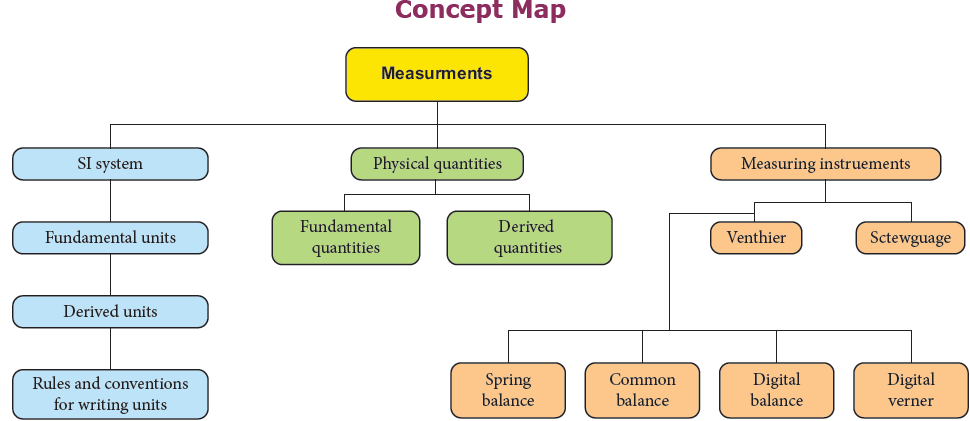

ROMAN NUMBER 1. Choose the correct answer.
1. Choose the correct one.
a.mm is less than cm is less than m is less than km
b. mm is greater than cm is greater than m is greater than km
c. km is less than m is less than cm is less than mm
d. mm is greater than m is greater than cm is greater than km
2. Rulers, measuring tapes and metre scales are used to measure
a. mass b. weight.c. time d. length
3. 1 metric ton is equal to
a. 100 quintals b. 10 quintals.c. 1 by10 quintals d. 1 by 100 quintals
4. Which among the following is not a device to measure mass question mark
a. Spring balance b. Beam balance c. Physical balance d. Digital balance
2. Fill in the blanks.
1. Metre is the unit of dash
2. 1 kg of rice is weighed by dash
3. Thickness of a cricket ball is measured by dash
4. Radius of a thin wire is measured by dash
5. A physical balance measures small differences in mass up to dash
3. State whether true or false. If false, correct the statement.
1. The SI unit of electric current is kilogram.
2. Kilometre is one of the SI units of measurement.
3. In everyday life, we use the term weight instead of mass.
4. A physical balance is more sensitive than a beam balance.
5. One Celsius degree is an interval of 1K and zero degree Celsius is 273.15 K.
6. With the help of vernier caliper we can have an accuracy of 0.1 mm and with screw gauge we can have an accuracy of 0.01 mm.
4. Match the following.
1. Length kelvin
Mass metre
Time kilogram
Temperature second
2. Screw gauge Vegetables
Vernier caliper Coins
Beam balance Gold ornaments
Digital balance Cricket ball
5. Assertion and reason type questions.
Mark the correct answer as:
a. Both A and R are true but R is not the correct reason.
b. Both A and R are true and R is the correct reason.
c. A is true but R is false.
d. A is false but R is true.
1. Assertion bracket open A bracket closed The scientifically correct expression is “ The mass of the bag is 10 kg”
Reason bracket open R bracket closed: In everyday life, we use the term weight instead of mass.
2. Assertion bracket open A bracket closed: 0 degree C = 273.16 K. For our convenience we take it as 273 K after rounding off the decimal.
Reason bracket open R bracket closed To convert a temperature on the Celsius scale we have to add 273 to the given temperature.
3. Assertion bracket open A bracket closed bracket closed: Distance between two celestial bodies is measured in terms of light year.
Reason bracket open R bracket closed: The distance travelled by the light in one year is one light year.
6. Answer very briefly.
1. Define measurement.
2. Define standard unit.
3. What is the full form of SI system question mark
4. Define least count of any device.
5. What do you know about pitch of screw gauge Question mark
6. Can you find the diameter of a thin wire of length 2 m using the ruler from your instrument box question mark
7. Answer briefly.
1. Write the rules that are followed in writing the symbols of units in SI system.
2. Write the need of a standard unit.
3. Differentiate mass and weight.
4. How will you measure the least count of vernier caliper question mark
8. Answer in detail.
1. Explain a method to find the thickness of a hollow tea cup.
2. How will you find the thickness of a one rupee coin question mark
9. Numerical Problems.
1. Innian and Ezhilan argue about the light year. Innian tells that it is 9.46 × 10 power 15 m and Ezhilan argues that it is 9.46 × 10 power 12 km. Who is right question mark Justify your answer.
2. The main scale reading while measuring the thickness of a rubber ball using Vernier caliper is 7 cm and the Vernier scale coincidence is 6. Find the radius of the ball.
3. Find the thickness of a five-rupee coin with the screw gauge, if the pitch scale reading is
1 mm and its head scale coincidence is 68.
4. Find the mass of an object weighing 98 N.
1. Units and Measurements – John Richards. S. Chand publishing, Ram nagar, New Delhi.
2. Complete physics bracket open IGCSE bracket closed- Oxford University press, New York.
3. Practical physics – Jerry. D. Wilson – Saunders college publishing, USA.
http://www.npl.co.uk/reference/measurementunits/
http://www.splung.com/content/sid/1/page/units
http://www.edinformatics.com/math_science/units.htm
https://www.unc.edu/~rowlett/units/dictA.html
https://study.com/academy/lesson/standardunits-of-measure.html

MEASUREMENT - VERNIER CALIPER
Vernier is a visual aid that helps the user to measure the internal and external diameter of the object.
This activity helps the students to understand the usage better
Step 1. Type the following URL in the browser or scan the QR code from your mobile.
You can see“Vernier caliper” on the screen.
Step 2.The yellow colour scale is movable. Now you can drag and keep the blue colour
cylinder in between. Now you can measure the dimension of the cylinder.
Use the plus symbol to drag cylinder and scale.
Step 3. Now go to the place where you can enter your answer. An audio gives you the
feedback and you can see the answer on the screen also
https://play.google.com/store/apps/detailsquestion markid=com.ionic framework Vernier app 777926